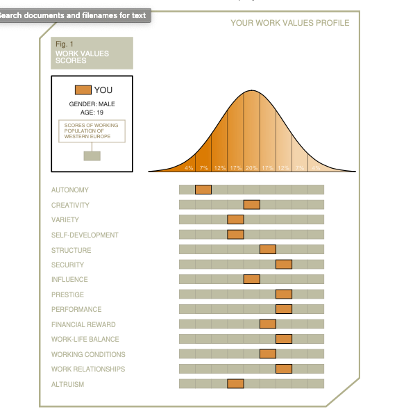

|
TheoryWhat is motivation? What does it do us? According to the articles like Sparknotes.com. 2020 |Motivation: What Is Motivation?| and Stunningmotivation.com.2020 | What is motivation? |, motivation is internal process. This internal process initiates, guides and moves a person towards a goal or a set idea. This term is usually used to describe why people are doing what they are doing. What drives them to wake up in the morning and go beyond their bed. It is also a process that drives us change our behavior and to improve ourselves. |
Types of motivationBut what kind of motivations exist today? What are the types of them? Cherry, K., 2020 |The Psychology Of What Motivates Us| and Shawn, L., 2020 | What is motivation? | state that there are 2 types of motivation that exist today. Intrinsic Motivation and Extrinsic motivation. |
|
Intrinsic motivationIt is a motivation that’s comes purely from inside of you. A good example of is that you do things not to get a prize for it, but because you want to prove yourself. An example from me is that without intrinsic motivation I would never be able to learn to draw as good as I am right now. Because I wanted to prove myself that I can draw better than some of my artist friends who share their art amongst themselves. |
Extrinsic motivationIt is a motivation that arises from the outside of the individual and almost always includes reward - money, fame, power, luxury or trophy . For me the best example are parents who always told you to stay calm and quiet and, in the end, youwill get a new toy or a candy as a reward. Which for me was very good motivator as I am Usually very loud and annoying to some people. |
TED talk - MotivationIn his TED talk speaker Dan introduces us on how different factors affect people’s motivation. Dan introduced this concept with a Candle problem.
He uses a candle problem to prove that one of the best motivator’s money will never motivate people to work better , but also never produces the best result.
Later Dan introduces different type of work environments that show positive impact on people’s motivations by simply making them more independent and free. |
|
Performance motivation - TestTest resultFor 60% you are: You are primarily intrinsically motivated. You are able to enjoy yourself in almost any activity, because you tend to engage in an activity for its own sake For 30% you are: You are obviously lying. You need to take a long, hard look at yourself. For 10% you are: You are primarily extrinsically motivated. You prefer to let outside factors dictate your actions. For 0% you are: You are not motivated. |
My thought on the resultTo be fair I agree to my test result. Like I previously said I am always instrinsically motivated. I do things for fun but also try to prove myself that I can do better then others without recieving prize or money in the end. I dont know what to say about the result that I am lying to myself. At the moment I dont see myself in this kind of position. But maybe in the future I will realize that my real motivator's where like a previously said about the example of parents, toys or a grade. In the feedback from PC02 I recieved 4/5 in Motivation. I really dont know why, maybe I didnt show teacher that I am motivated and ready to work.But the test result really back up that fact. |
Career anchors/valuesYour work shouldn’t take over your whole life and be only about it. Best example that I can give on this matter is my experience from my school life. Even though I liked school, and I know the importance of it. But it sometimes took over my life, long assignment’s and long study night meant that I can’t enjoy my free time activity, if I would like to have a high grade. Another important value for me is a Work-Life relationships. Without good relationships at work with other colleagues you will not be able to produce/create good product. An example from life is also form my school life. When we got divided in groups to work on a task. Whith poeple who I knew well and have good relationships I was successfull in task, but with people with who I have bad realationships I always failed. For me all its very hard to decide which of these other values are least important. Because if you think about it very hard, all of them are as much as important as those that I described uptop. Finacial reward, no one would like to work underpaid for a hard job. Work enviorment, who would like to work in terrible enviorment? |
 |
ConclusionAfter looking back at my work and evaluating everything I think that I am motivated enough to continue my studies at HZ in Inforamtion and Communication Technology prgramme. |
Resource list |
|
Sparknotes.com. 2020. Motivation: What Is Motivation? | Sparknotes. Available at: Link to the site Psychology Today. 2020. Motivation. | Available at: Link to the site Cherry, K., 2020. The Psychology Of What Motivates Us | Available at: Link to the site Shawn, L., 2020. What is motivation? | Available at: Link to the site Dan, P., 2009. TED talk: The puzzle of motivation | Available at: Link to the site |